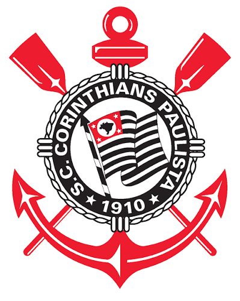
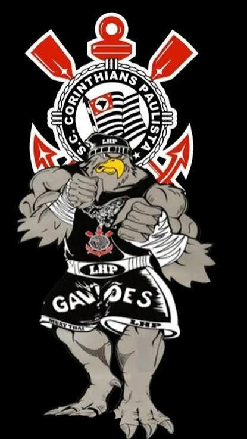

Fundação: 1 de setembro de 1910
Sob a luz de um lampião no bairro do Bom Retiro, em São Paulo, um grupo de operários decidiu fundar um clube de futebol. Assim nasceu o Sport Club Corinthians Paulista, o "Time do Povo". Diferente da elite da época, o Corinthians sempre carregou o DNA da massa trabalhadora.
A força de sua "Fiel Torcida" é lendária, imortalizada em eventos como a Invasão Corintiana de 1976 no Maracanã e o Mundial de 2012 no Japão. Palco de movimentos históricos como a Democracia Corinthiana liderada por Sócrates na década de 80, o clube atingiu o topo do mundo duas vezes (2000 e 2012), sendo o último de forma épica e invicta contra o Chelsea.